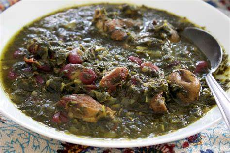

Best Ghorme

مواد لازم
- گوش گوسفندی ۸۰۰ گرم
- پیاز ۲ عدد
- برگ بو ۲ عدد
- چوب دارچین ۱ تکه
- نمک و فلفل سیاه به مقدار کافی
- زردچوبه و فلفل قرمز به مقدار کافی
دستور پخت
- برای تهیه قورمه گوشت سنتی ابتدا آب را درون یک قابلمه مناسب می ریزیم، سپس روی حرارت زیاد قرار می دهیم تا آب شروع به جوشیدن کند. در همین حین گوشت گوسفندی را به صورت تکه های کوچک خرد می کنیم.
- در این مرحله تکه های گوشت را به آب جوش اضافه می کنیم و اجازه می دهیم کف گوشت خارج شود. در ادامه کف های روی سطح آب را با قاشق جمع کرده و دور می ریزیم. این کار باعث می شود که بوی زهم گوشت گرفته شود.
- حالا پیازها را به صورت خلالی درشت خرد می کنیم و به همراه دنبه خرد شده، چوب دارچین، برگ بو و مقداری زردچوبه، فلفل قرمز و فلفل سیاه به قابلمه اضافه می کنیم. در ادامه درب قابلمه را با یک تکه پارچه تمیز می پوشانیم
- در این مرحله اجازه می دهیم گوشت به مدت دو ساعت با حرارت ملایم بپزد، سپس تکه های گوشت را برمی گردانیم و اجازه می دهیم آب درون قابلمه به طور کامل کشیده شده و دنبه ها شروع به روغن انداختن کنند.
- پس از اینکه آب درون قابلمه کشیده شد، برگ و چوب دارچین را از قابلمه خارج کرده و اجازه می دهیم تکه های گوشت با روغن دنبه سرخ شوند. هر چند لحظه یک بار گوشت ها را می چرخانیم تا به صورت یکدست سرخ شوند.
- پس از اینکه دنبه ها به خوبی آب شدند و تکه های گوشت کاملا سرخ شدند، مقداری نمک اضافه می کنیم. در نهایت تکه های گوشت و دنبه را داخل ظرف مورد نظرمان می کشیم، سپس به همراه نان یا برنج سرو می کنیم.